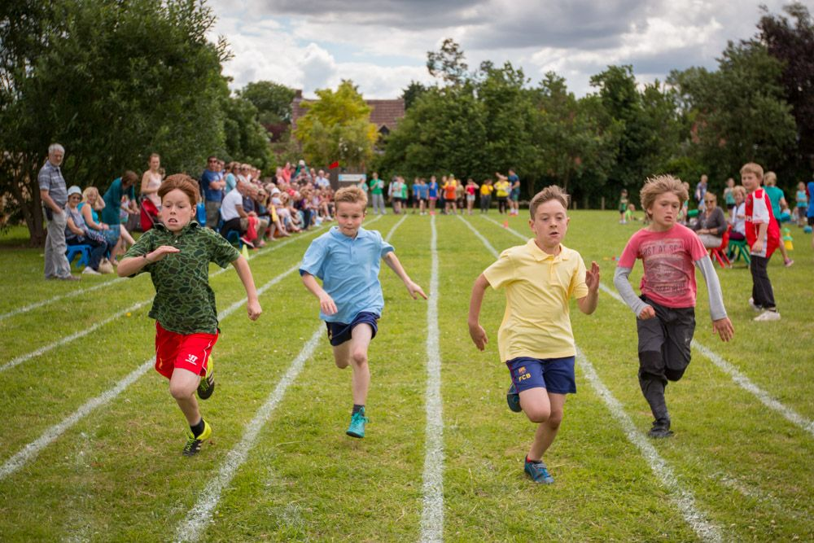

Annual Day is a special occasion where we celebrate the achievements and talents of our students and staff through performances, awards, and speeches. It reflects our school’s values and spirit. We thank all parents and guests for their support and look forward to a joyful celebration.
Sports Day is a lively and exciting event that celebrates fitness, teamwork, and sportsmanship. It offers students a chance to showcase their athletic skills and learn important values like discipline and fair play. We thank our staff, volunteers, and participants for making this day a success and for promoting the spirit of sports in our school.
Inter-house events are a vital part of school life, fostering healthy competition, teamwork, and school spirit. Through sports, debates, and cultural activities, students build confidence, leadership, and lasting friendships. These events enrich the school experience and support students' overall growth.

A school exhibition is a great platform for students to explore ideas and showcase creativity through projects and presentations. It encourages hands-on learning, teamwork, and confidence while highlighting students’ talent and curiosity. Such events foster innovation and make learning a joyful, enriching experience.